Raspberry Pi User Guide
Required Hardware
Development Kits
MAX96717 GMSL Serializer Evaluation Kit or GMSL camera
Raspberry Pi 4 Model B (2GB of RAM or more preferred)
Supported Image Sensors & Cameras
Cables
Warning
Do not use the 15-pin ribbon cable included with the Raspberry Pi camera since that is an opposite sided cable.
Board Modifications
Using the procedure to Set CFG Pin Levels, configure the serdes pair as follows:
CFG0 |
0 – I2C, ROR, 0x80 |
0 – I2C, 0x4E |
CFG1 |
7 – Coax, 6Gbps, Pixel |
0 – Coax, GMSL2, 6Gbps |
Important
It is required to set the CFG pins to the indicated levels for this setup.
For more information about the default CFG configuration of each evaluation board, please visit the respective datasheet documentation:
GMSL Deserializer Evaluation Kit
Slide the SW5 switches to the ON position - enables I2C communication over the CSI bus
Remove the J18 and J19 jumpers to allow the Rpi to become the Main host controller for the I2C lines.
Make sure the J3 is set as default 2-3 position to enable POC.
Bridge R88 - provides VDDIO to the adapter
{kind=link}
{kind=link}
GMSL Serializer Evaluation Kit
Place a jumper on the J10 connector - enables power over the coaxial cable
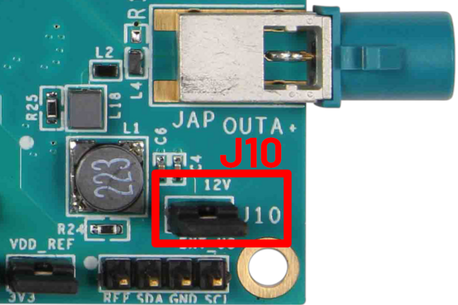Bridge R70 - provides 12V to the adapter
Bridge R80 - connects MFP2 to the adapter for IMX219
Bridge R66 - provides VDDIO to the adapter
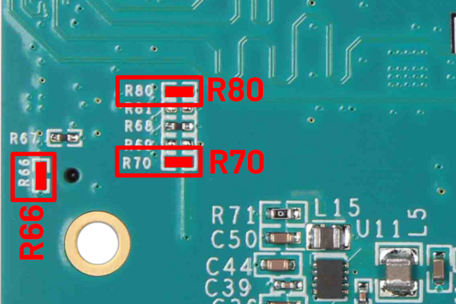
{kind=link}
{kind=link}
AD-GMSLCAMRPI-ADP# Adapter
Configure the switch S2 on the GMSL Serializer adapter for CAM1 on connector P9.
Configure the switch S1 on the GMSL Deserializer adapter for CAM2 on connector P6 and slide switch S3 towards connector P6.
Serializer Adapter
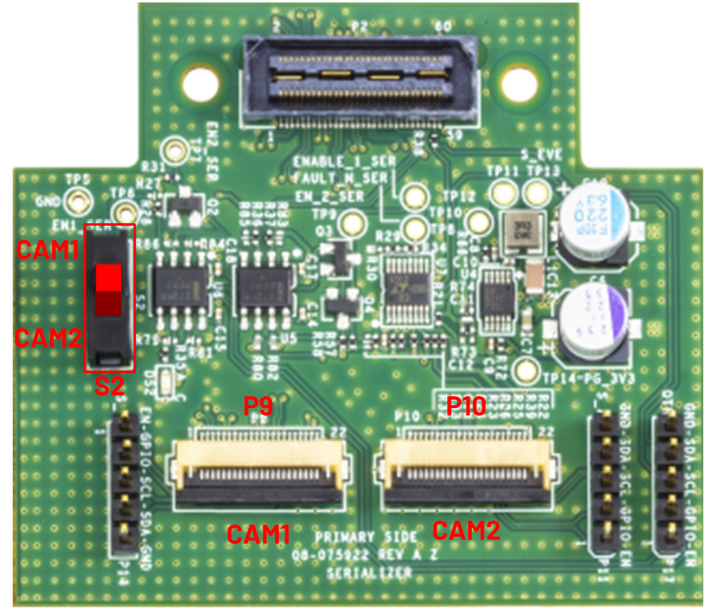{kind=link}
Deserializer Adapter
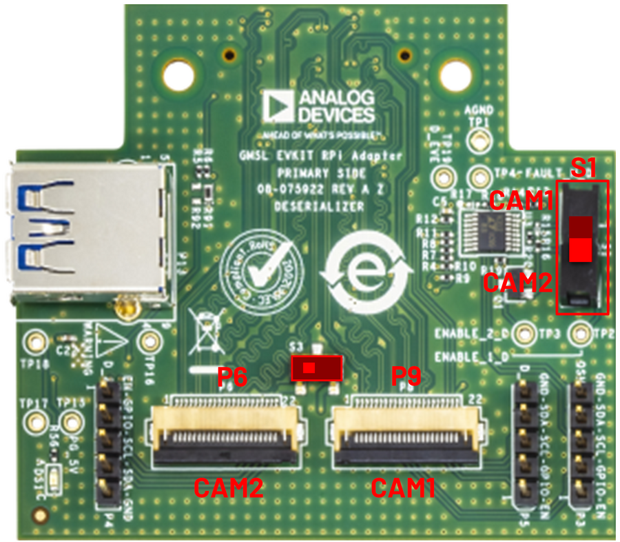{kind=link}
System Setup
MAX96717 Serializer EV Kit Configuration
For the following setup, please ensure ribbon cables and boards are oriented to match the diagrams.
Connect the 15-pin ribbon cable to the camera board.
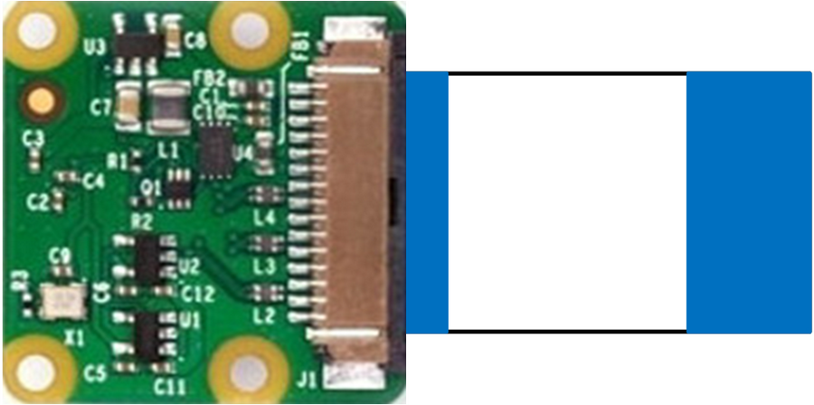{kind=link}
Connect the other end of the 15 pin ribbon cable into the 15-to-22 pin adaptor board.
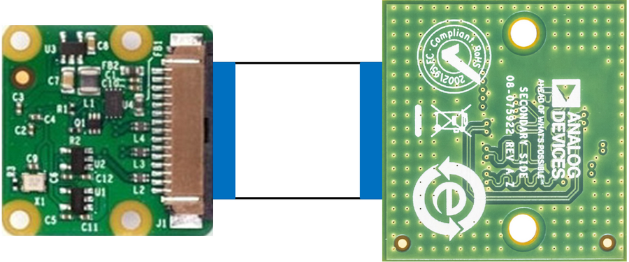{kind=link}
On the other side of the 15-to-22 pin adaptor board, connect the 22-pin ribbon cable. Note: This is an opposite sided flex cable, please ensure it matches the orientation in the picture.
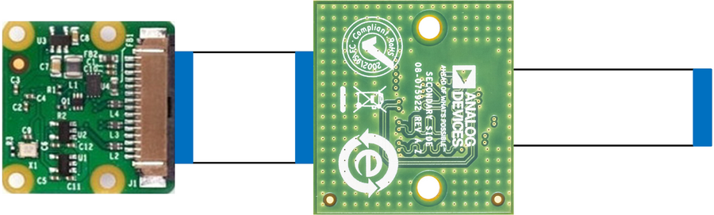{kind=link}
Connect the other end of the 22 pin ribbon cable into the EV kit adaptor board P9 connector.
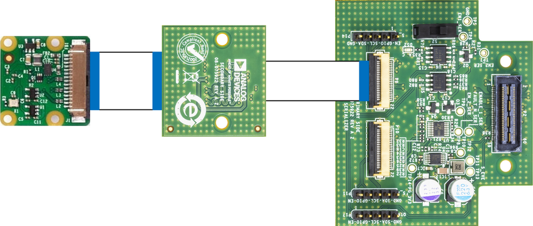{kind=link}
Lastly, connect the EV kit adaptor board to the MAX96717 EV kit.
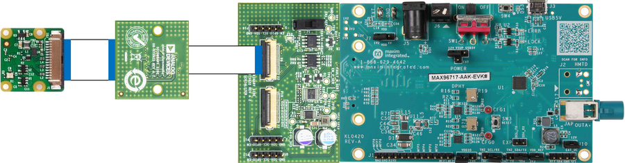{kind=link}
MAX96724 Deserializer EV Kit Configuration
Starting with the Raspberry Pi 4B, connect the 15 pin ribbon cable to the CSI input connector.
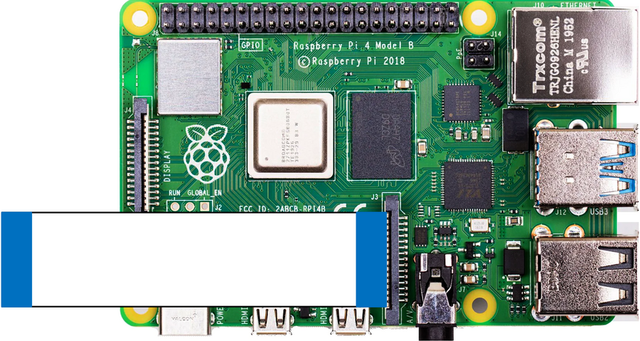{kind=link}
Connect the other end of the 15 pin ribbon cable into the 15-to-22 pin adaptor board.
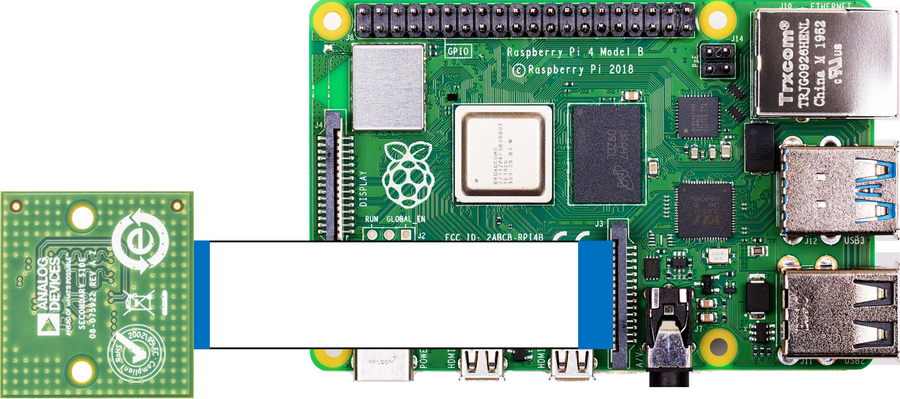{kind=link}
On the other side of the 15-to-22 pin adaptor board, connect the 22-pin ribbon cable. Note: This is an opposite sided flex cable, please ensure it matches the orientation in the picture.
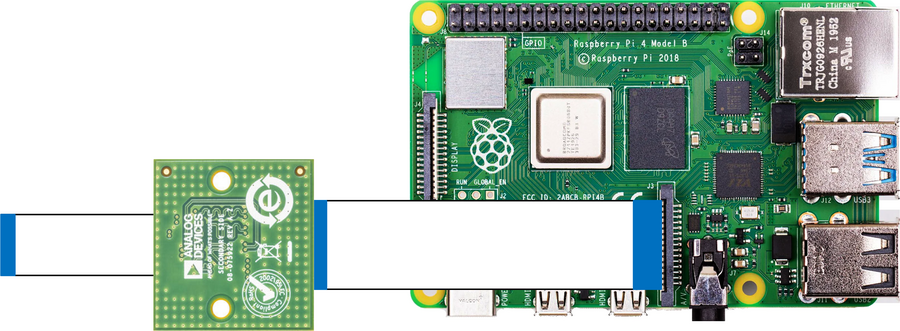{kind=link}
Connect the other end of the 22 pin ribbon cable into the EV kit adaptor board P8 connector.
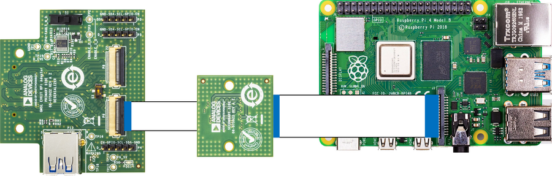{kind=link}
Lastly, connect the EV kit adaptor board to the MAX96724 EV kit.
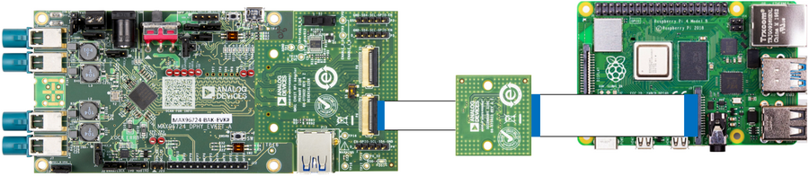{kind=link}
With both sides of the SerDes devices connected up, the last step it to connect the two sides together with the coax cable. The MAX96717 serializer only has one connection. The MAX96724 deserializer has 4 inputs so connect the coax cable to link A (INA) on J7.
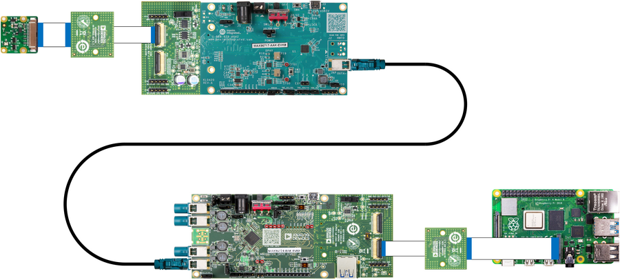{kind=link}
Connect power to the 12V barrel jack J1 of the MAX96724 deserializer. If utilizing the GMSL GUI, also connect the micro USB cable to J6 of the MAX96724 deserializer EV kit.
Raspberry Pi 4 Configuration
Connect the USB-C power supply to the Raspberry Pi 4 connector.
Connect the HDMI cable from the monitor to the Raspberry Pi micro HDMI connector.
Write the Raspberry Pi latest SD card image on a 8GB (or more) SD card.
Plug the SD card into the Raspberry Pi 4 SD card slot.
Connect a USB mouse and keyboard to the Raspberry Pi 4. It’s possible to use either a mouse & keyboard combo or a separate mouse and keyboard.
Running the Evaluation Application
Once Linux boots you’ll see on the HDMI monitor the Linux desktop and on the top left corner a shortcut to the script named video_cfg.sh. Double-clicking on the icon will start the media-ctl configuration script to connect to the V4L2 media pipeline. It may not appear that anything happens but the script runs in background without any pop ups.
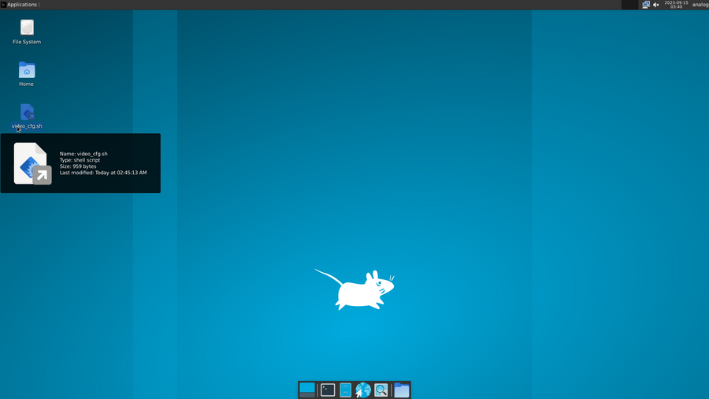After the script runs, double-click on the Qt V4L2 test Utility icon to start the video capture application. A window will open then press the green play button to start video capturing.
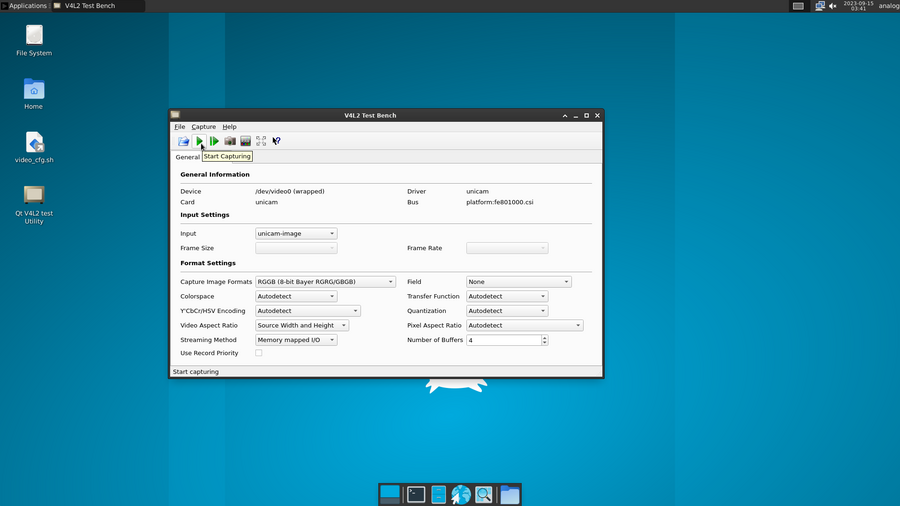The capture window will look like below.
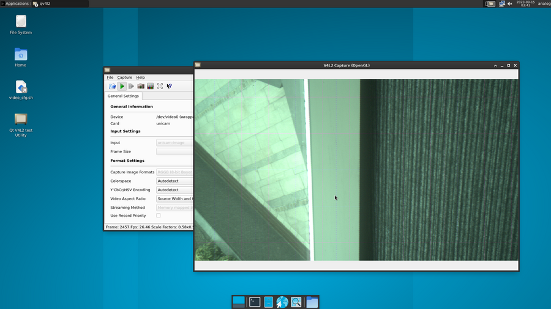Note
Some displays may have vertical/horizontal lines. This is typically an artifact caused on HDMI monitors and unrelated to the evaluation setup.
Power-off Sequence
Open a terminal and type sudo poweroff. This will safely power off the Raspberry Pi 4 and ensure that the SD card is properly unmounted.
Remove the power supply from the Raspberry Pi 4.
Remove the power supply from the MAX96724 EV kit.
Getting the Software
The GMSL Linux kernel drivers, the complete Linux distributions for the supported processing platforms, and software user guides can be found on the Analog Devices GMSL GitHub repository.
Tips for Troubleshooting
There are a few key commands in the Linux environment that can help identify if the expected connections and communications have been made.
In the Linux environment, you can check to see if the Rpi I2C is detecting the GMSL boards by sending a I2C detect command [1] as follows:
~$
sudo i2cdetect -y 10
The Result should look as follows in the terminal:
user@kuiper-gmsl:~$
sudo i2cdetect -y 10
[sudo] password for analog: 0 1 2 3 4 5 6 7 8 9 a b c d e f 00: -- -- -- -- -- -- -- -- 10: UU -- -- -- -- -- -- -- -- -- -- -- -- -- -- -- 20: -- -- -- -- -- -- -- UU -- -- -- -- -- -- -- -- 30: -- -- -- -- -- -- -- -- -- -- -- -- -- -- -- -- 40: 40 -- -- -- -- -- -- -- -- -- -- -- -- -- -- -- 50: -- -- -- -- -- -- -- -- -- -- -- -- -- -- -- -- 60: -- -- -- -- 64 -- -- -- -- -- -- -- -- -- -- -- 70: -- -- -- -- -- -- -- --You can also confirm that the video for Linux application is detecting the camera and GMSL devices by using the following command:
~$
v4l2-ctl --list-devicesThe response should look like the following:
~$
v4l2-ctl --list-devicesbcm2835-codec-decode (platform:bcm2835-codec): /dev/video10 /dev/video11 /dev/video12 /dev/video18 /dev/video31 /dev/media2 bcm2835-isp (platform:bcm2835-isp): /dev/video13 /dev/video14 /dev/video15 /dev/video16 /dev/video20 /dev/video21 /dev/video22 /dev/video23 /dev/media1 /dev/media3 unicam (platform:fe801000.csi): /dev/video0 /dev/video1 /dev/media4 rpivid (platform:rpivid): /dev/video19 /dev/media0The key is to identify the unicam output, which correspond to the Rpi camera setup.